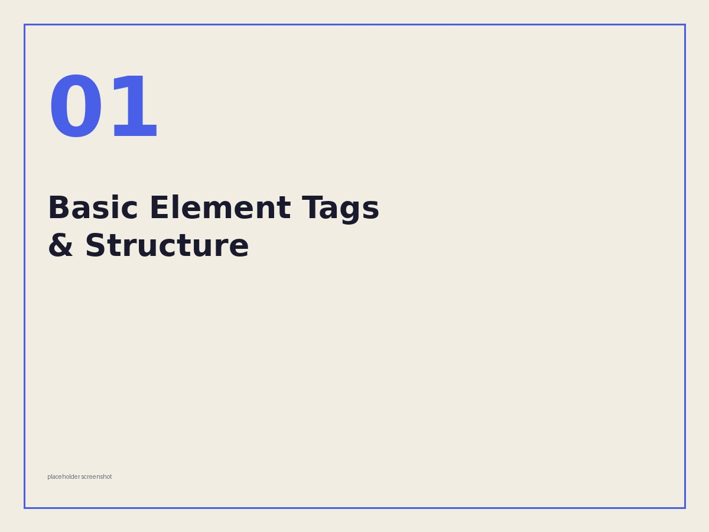
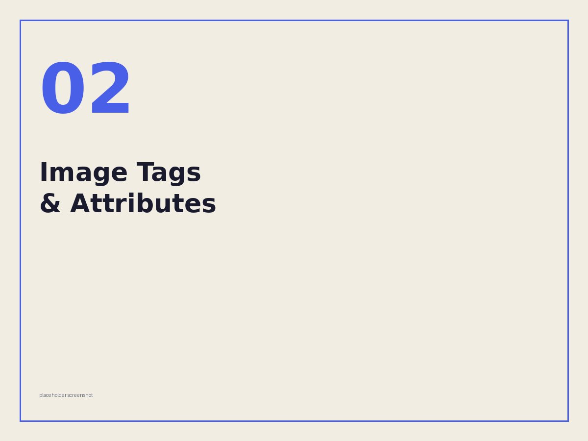
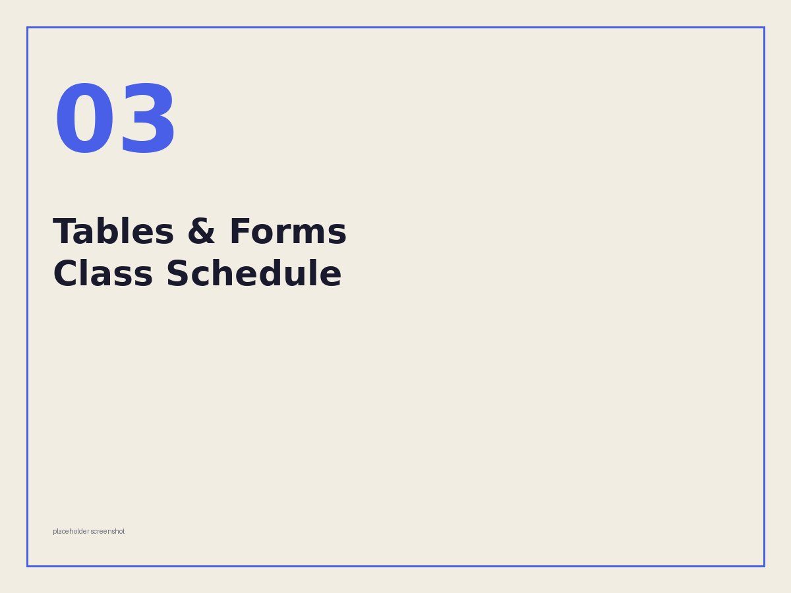
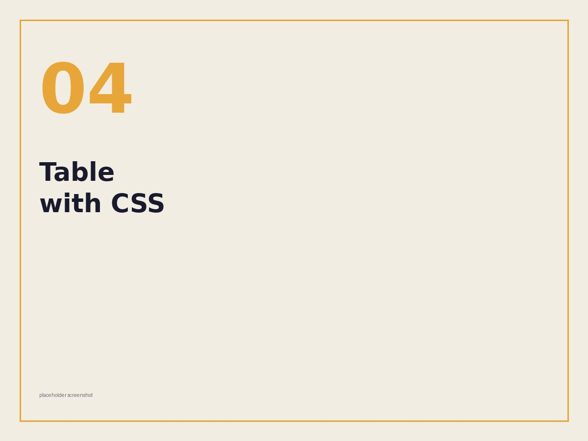
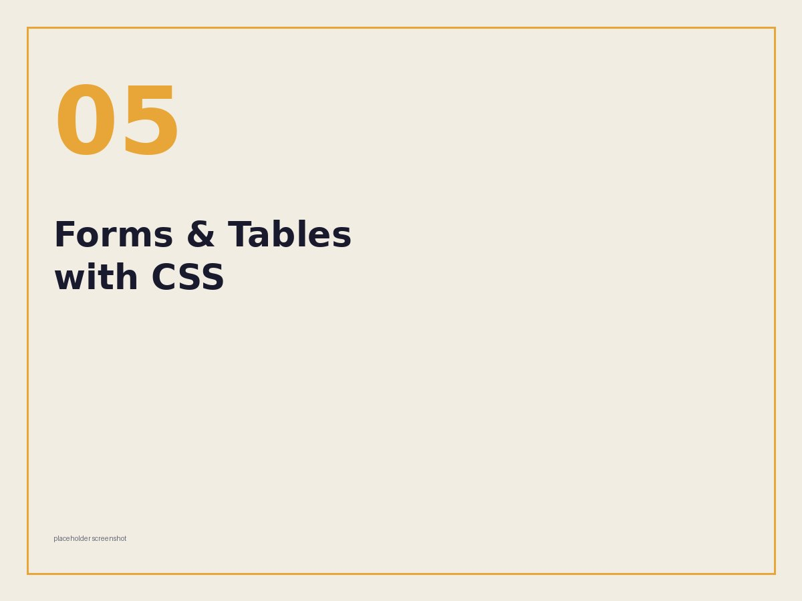
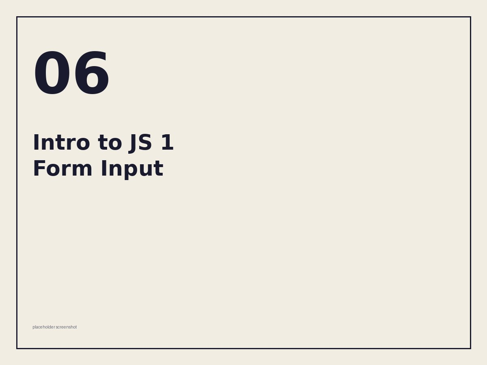
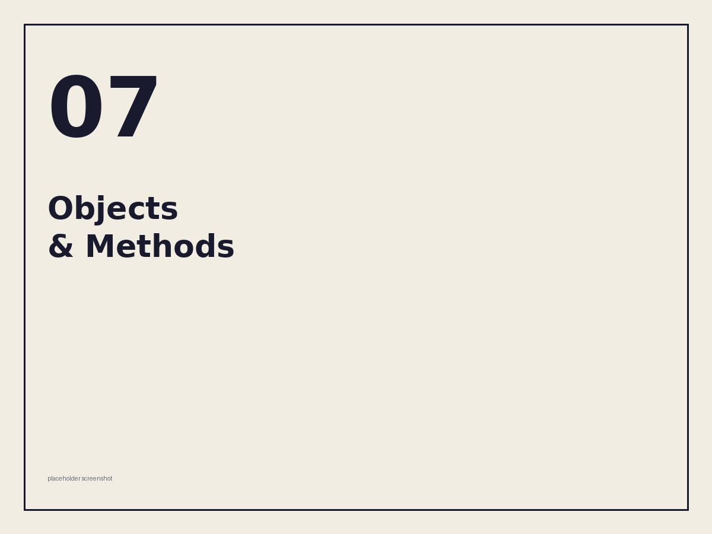
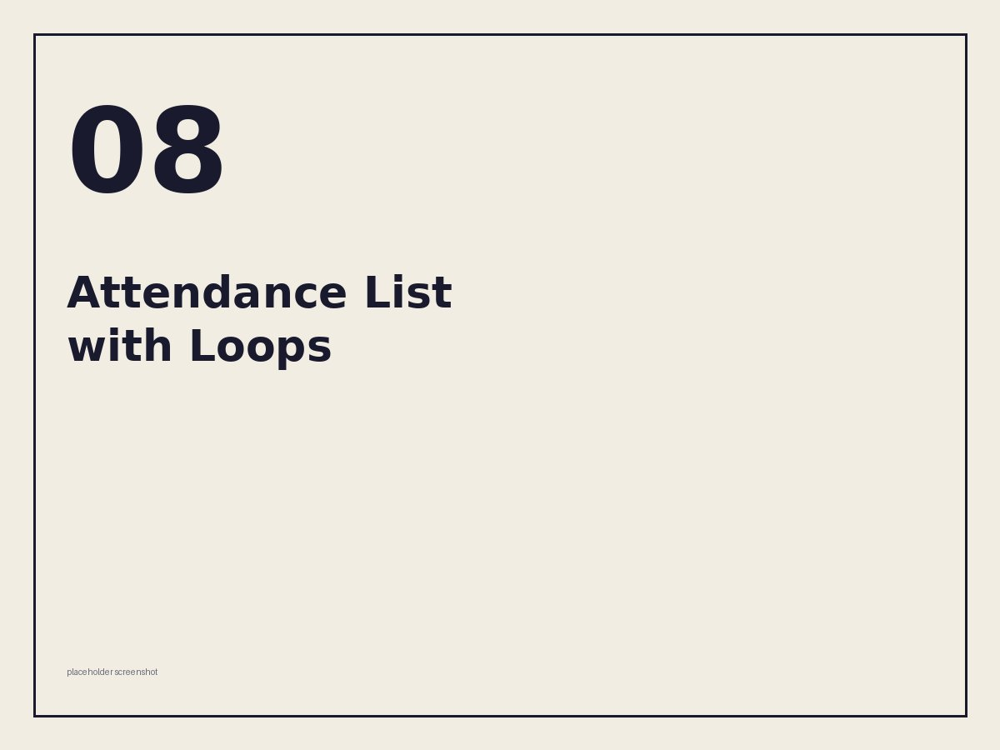

01
Prelim
Basic element tags & structure
Our first lesson's key takeaways, laid out using core HTML elements — headings, paragraphs, lists, and basic document structure.
HTMLThe coursework
Each card is a real submission — filter by term, or scroll through all of them in order.

01Our first lesson's key takeaways, laid out using core HTML elements — headings, paragraphs, lists, and basic document structure.
HTML
02Proper use of the <img> tag — src, alt, sizing —
building on the structure from Activity 1.

03A full class schedule built entirely with table elements — rows, columns, headers, and merged cells.
HTML
04The same schedule from Activity 3, now styled with inline CSS and CSS attributes written directly in the HTML.
HTML · CSS
05Proper use of form elements — inputs, labels, select menus, buttons — finished off with CSS styling.
HTML · CSS
06A form built to grab input values with JavaScript and display them back on the page once submitted.
HTML · CSS · JS
07Part 1 of the JavaScript objects unit — defining objects and calling methods to output data dynamically.
HTML · CSS · JS
08Part 2 — a class attendance object built with loops, an add button, and results rendered as a list, styled after a Linktree-style landing page.
HTML · CSS · JS